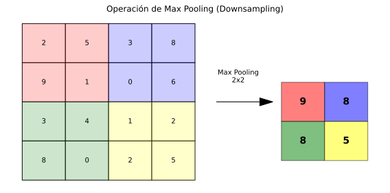

🧠 Unidad 2. Redes Neuronales Convolucionales (CNN)
Las Redes Neuronales Convolucionales (Convolutional Neural Networks - CNN) son arquitecturas especializadas en procesar datos con estructura de cuadrícula, como imágenes. Son el estándar para tareas de visión por computadora.

2.1. ¿Por qué CNN para Imágenes?
Limitaciones de las Redes Fully Connected
Una imagen de 224x224 píxeles con 3 canales (RGB) tiene: $\(224 \times 224 \times 3 = 150,528 \text{ valores de entrada}\)$
Si conectamos esto a una capa oculta de 1000 neuronas: $\(150,528 \times 1000 = 150,528,000 \text{ parámetros}\)$
Problemas:
- Demasiados parámetros (overfitting, memoria).
- No aprovecha la estructura espacial de la imagen.
- No es invariante a traslaciones.
Ventajas de las CNN
- Conexiones locales: Cada neurona ve solo una región pequeña.
- Compartición de pesos: Los mismos filtros se aplican en toda la imagen.
- Invariancia a traslaciones: Detectan patrones sin importar su posición.
- Jerarquía de características: Capas iniciales detectan bordes, las profundas detectan objetos.
2.2. La Operación de Convolución
La convolución es una operación matemática que aplica un filtro (kernel) sobre la imagen.
Proceso
- El filtro se desliza sobre la imagen.
- En cada posición, se calcula el producto punto entre el filtro y la región de la imagen.
- El resultado forma un mapa de características (feature map).
Visualización
Imagen (5x5): Filtro (3x3):
┌─────────────────┐ ┌─────────┐
│ 1 2 3 4 5 │ │ 1 0 -1 │
│ 6 7 8 9 10 │ * │ 1 0 -1 │ = Feature Map
│ 11 12 13 14 15 │ │ 1 0 -1 │
│ 16 17 18 19 20 │ └─────────┘
│ 21 22 23 24 25 │
└─────────────────┘
Implementación
import numpy as np
def convolucion_2d(imagen, filtro, stride=1, padding=0):
"""
Realiza convolución 2D.
"""
# Padding
if padding > 0:
imagen = np.pad(imagen, padding, mode='constant')
h_img, w_img = imagen.shape
h_filtro, w_filtro = filtro.shape
# Tamaño de salida
h_out = (h_img - h_filtro) // stride + 1
w_out = (w_img - w_filtro) // stride + 1
output = np.zeros((h_out, w_out))
for i in range(h_out):
for j in range(w_out):
region = imagen[i*stride:i*stride+h_filtro, j*stride:j*stride+w_filtro]
output[i, j] = np.sum(region * filtro)
return output
# Ejemplo: Detector de bordes verticales
imagen = np.array([
[10, 10, 10, 0, 0, 0],
[10, 10, 10, 0, 0, 0],
[10, 10, 10, 0, 0, 0],
[10, 10, 10, 0, 0, 0],
[10, 10, 10, 0, 0, 0],
[10, 10, 10, 0, 0, 0]
])
filtro_vertical = np.array([
[1, 0, -1],
[1, 0, -1],
[1, 0, -1]
])
resultado = convolucion_2d(imagen, filtro_vertical)
print("Feature Map:\n", resultado)
2.3. Componentes de una CNN
Capa Convolucional (Conv2D)
Aplica múltiples filtros para extraer diferentes características.
from tensorflow.keras.layers import Conv2D
# 32 filtros de 3x3
conv_layer = Conv2D(
filters=32, # Número de filtros
kernel_size=(3, 3), # Tamaño del filtro
strides=(1, 1), # Paso del deslizamiento
padding='same', # 'same' mantiene dimensiones, 'valid' no usa padding
activation='relu'
)
Parámetros Importantes
| Parámetro | Descripción |
|---|---|
filters |
Número de filtros (profundidad del output) |
kernel_size |
Tamaño del filtro (típicamente 3x3 o 5x5) |
strides |
Paso del deslizamiento |
padding |
'same' (mantiene tamaño) o 'valid' (reduce) |
Capa de Pooling (MaxPool, AvgPool)
Reduce las dimensiones espaciales, manteniendo las características más importantes.

from tensorflow.keras.layers import MaxPooling2D, AveragePooling2D
# Max Pooling: toma el valor máximo de cada región
max_pool = MaxPooling2D(pool_size=(2, 2))
# Average Pooling: toma el promedio
avg_pool = AveragePooling2D(pool_size=(2, 2))
Max Pooling 2x2:
┌─────────┐ ┌─────┐
│ 1 3 │ 2 4 │ │ 3 │ 4 │
│ 5 6 │ 7 8 │ → │ 6 │ 8 │
├─────┼─────┤ └─────┘
│ 9 2 │ 3 1 │
│ 3 4 │ 2 5 │
└─────────┘
Flatten y Capas Densas
Después de las convoluciones, se "aplana" el tensor para conectar con capas densas.
from tensorflow.keras.layers import Flatten, Dense
# Flatten: convierte tensor 3D a 1D
flatten = Flatten()
# Dense: capas completamente conectadas
dense = Dense(128, activation='relu')
2.4. Arquitectura Típica de CNN
Input → [Conv → ReLU → Pool] × N → Flatten → Dense → Output
Ejemplo para clasificación de imágenes:
- Input: 224x224x3
- Conv2D(32, 3x3) → ReLU → MaxPool(2x2) → 112x112x32
- Conv2D(64, 3x3) → ReLU → MaxPool(2x2) → 56x56x64
- Conv2D(128, 3x3) → ReLU → MaxPool(2x2) → 28x28x128
- Flatten → 100,352
- Dense(256) → ReLU → 256
- Dense(10) → Softmax → 10 clases
Implementación en Keras
from tensorflow.keras import Sequential
from tensorflow.keras.layers import Conv2D, MaxPooling2D, Flatten, Dense, Dropout, Input
def crear_cnn(input_shape, num_clases):
"""
Crea una CNN básica para clasificación de imágenes.
"""
modelo = Sequential([
Input(shape=input_shape),
# Bloque 1
Conv2D(32, (3, 3), activation='relu', padding='same'),
Conv2D(32, (3, 3), activation='relu', padding='same'),
MaxPooling2D((2, 2)),
# Bloque 2
Conv2D(64, (3, 3), activation='relu', padding='same'),
Conv2D(64, (3, 3), activation='relu', padding='same'),
MaxPooling2D((2, 2)),
# Bloque 3
Conv2D(128, (3, 3), activation='relu', padding='same'),
Conv2D(128, (3, 3), activation='relu', padding='same'),
MaxPooling2D((2, 2)),
# Clasificador
Flatten(),
Dense(256, activation='relu'),
Dropout(0.5),
Dense(num_clases, activation='softmax')
])
return modelo
# Crear modelo para CIFAR-10 (imágenes 32x32x3, 10 clases)
modelo = crear_cnn((32, 32, 3), 10)
modelo.summary()
2.5. Ejemplo Completo: Clasificación CIFAR-10
import tensorflow as tf
from tensorflow.keras.datasets import cifar10
from tensorflow.keras.utils import to_categorical
import matplotlib.pyplot as plt
# Cargar datos
(X_train, y_train), (X_test, y_test) = cifar10.load_data()
# Nombres de las clases
clases = ['avión', 'auto', 'pájaro', 'gato', 'venado',
'perro', 'rana', 'caballo', 'barco', 'camión']
# Preprocesamiento
X_train = X_train.astype('float32') / 255.0
X_test = X_test.astype('float32') / 255.0
y_train = to_categorical(y_train, 10)
y_test = to_categorical(y_test, 10)
print(f"Train: {X_train.shape}, Test: {X_test.shape}")
# Crear modelo
modelo = crear_cnn((32, 32, 3), 10)
# Compilar
modelo.compile(
optimizer='adam',
loss='categorical_crossentropy',
metrics=['accuracy']
)
# Entrenar
historia = modelo.fit(
X_train, y_train,
epochs=20,
batch_size=64,
validation_split=0.1,
verbose=1
)
# Evaluar
loss, accuracy = modelo.evaluate(X_test, y_test)
print(f"\nAccuracy en test: {accuracy:.4f}")
# Visualizar algunas predicciones
predicciones = modelo.predict(X_test[:10])
fig, axes = plt.subplots(2, 5, figsize=(15, 6))
for i, ax in enumerate(axes.flat):
ax.imshow(X_test[i])
pred_clase = clases[predicciones[i].argmax()]
real_clase = clases[y_test[i].argmax()]
color = 'green' if pred_clase == real_clase else 'red'
ax.set_title(f'Pred: {pred_clase}\nReal: {real_clase}', color=color)
ax.axis('off')
plt.tight_layout()
plt.show()
2.6. Arquitecturas Famosas
LeNet-5 (1998)
La primera CNN exitosa, diseñada para reconocimiento de dígitos.
def lenet5(input_shape=(28, 28, 1), num_clases=10):
return Sequential([
Input(shape=input_shape),
Conv2D(6, (5, 5), activation='tanh'),
MaxPooling2D((2, 2)),
Conv2D(16, (5, 5), activation='tanh'),
MaxPooling2D((2, 2)),
Flatten(),
Dense(120, activation='tanh'),
Dense(84, activation='tanh'),
Dense(num_clases, activation='softmax')
])
VGG (2014)
Arquitectura profunda con filtros pequeños (3x3).
def vgg_block(num_convs, num_filters):
"""Un bloque VGG: múltiples Conv2D seguidas de MaxPool."""
layers = []
for _ in range(num_convs):
layers.append(Conv2D(num_filters, (3, 3), activation='relu', padding='same'))
layers.append(MaxPooling2D((2, 2)))
return layers
ResNet (2015)
Introdujo las conexiones residuales (skip connections) para entrenar redes muy profundas.
from tensorflow.keras.layers import Add
def bloque_residual(x, filtros):
"""Bloque residual de ResNet."""
# Rama principal
fx = Conv2D(filtros, (3, 3), padding='same', activation='relu')(x)
fx = Conv2D(filtros, (3, 3), padding='same')(fx)
# Skip connection
out = Add()([x, fx])
out = tf.keras.activations.relu(out)
return out
Comparación
| Arquitectura | Año | Capas | Parámetros | Top-5 Error (ImageNet) |
|---|---|---|---|---|
| LeNet-5 | 1998 | 5 | 60K | - |
| AlexNet | 2012 | 8 | 60M | 16.4% |
| VGG-16 | 2014 | 16 | 138M | 7.3% |
| ResNet-50 | 2015 | 50 | 25M | 3.6% |
| EfficientNet-B7 | 2019 | 66M | 66M | 2.9% |
2.7. Data Augmentation
Técnica para aumentar artificialmente el dataset aplicando transformaciones a las imágenes.
from tensorflow.keras.preprocessing.image import ImageDataGenerator
# Generador con aumentaciones
datagen = ImageDataGenerator(
rotation_range=15, # Rotación aleatoria
width_shift_range=0.1, # Desplazamiento horizontal
height_shift_range=0.1, # Desplazamiento vertical
horizontal_flip=True, # Volteo horizontal
zoom_range=0.1, # Zoom aleatorio
shear_range=0.1, # Cizallamiento
fill_mode='nearest' # Cómo rellenar píxeles vacíos
)
# Usar en entrenamiento
modelo.fit(
datagen.flow(X_train, y_train, batch_size=32),
epochs=50,
validation_data=(X_test, y_test)
)
Data Augmentation con tf.keras.layers
from tensorflow.keras.layers import RandomFlip, RandomRotation, RandomZoom
# Capa de aumentación como parte del modelo
data_augmentation = Sequential([
RandomFlip("horizontal"),
RandomRotation(0.1),
RandomZoom(0.1),
])
# Aplicar solo durante entrenamiento
modelo = Sequential([
Input(shape=(224, 224, 3)),
data_augmentation,
# ... resto del modelo
])
2.8. Transfer Learning
Usar modelos preentrenados en grandes datasets (ImageNet) y adaptarlos a nuestro problema.
Estrategias
- Feature Extraction: Congelar las capas convolucionales, entrenar solo el clasificador.
- Fine-tuning: Descongelar algunas capas superiores y entrenarlas con learning rate bajo.
from tensorflow.keras.applications import VGG16
from tensorflow.keras.layers import GlobalAveragePooling2D
# Cargar modelo preentrenado (sin la cabeza de clasificación)
base_model = VGG16(
weights='imagenet',
include_top=False,
input_shape=(224, 224, 3)
)
# Congelar capas del modelo base
base_model.trainable = False
# Añadir nuevo clasificador
modelo = Sequential([
base_model,
GlobalAveragePooling2D(),
Dense(256, activation='relu'),
Dropout(0.5),
Dense(10, activation='softmax') # 10 nuevas clases
])
# Entrenar solo las capas nuevas
modelo.compile(optimizer='adam', loss='categorical_crossentropy', metrics=['accuracy'])
modelo.fit(X_train, y_train, epochs=10)
# Fine-tuning: descongelar últimas capas
base_model.trainable = True
for layer in base_model.layers[:-4]: # Congelar todas menos las últimas 4
layer.trainable = False
# Recompilar con learning rate bajo
modelo.compile(
optimizer=tf.keras.optimizers.Adam(1e-5), # LR muy bajo
loss='categorical_crossentropy',
metrics=['accuracy']
)
modelo.fit(X_train, y_train, epochs=10)
2.9. Aplicaciones de CNN
Clasificación de Imágenes
Asignar una etiqueta a toda la imagen.
Detección de Objetos
Localizar y clasificar múltiples objetos en una imagen.
- YOLO (You Only Look Once)
- Faster R-CNN
- SSD (Single Shot Detector)
Segmentación Semántica
Clasificar cada píxel de la imagen.
- U-Net (para imágenes médicas)
- Mask R-CNN (segmentación de instancias)
Reconocimiento Facial
- Detección de caras
- Verificación de identidad
- Análisis de expresiones
2.10. Visualización de Filtros y Feature Maps
import numpy as np
import matplotlib.pyplot as plt
# Visualizar filtros de la primera capa convolucional
filtros = modelo.layers[0].get_weights()[0]
fig, axes = plt.subplots(4, 8, figsize=(16, 8))
for i, ax in enumerate(axes.flat):
if i < filtros.shape[-1]:
# Normalizar filtro para visualización
f = filtros[:, :, :, i]
f = (f - f.min()) / (f.max() - f.min())
ax.imshow(f)
ax.axis('off')
plt.suptitle('Filtros de la Primera Capa Convolucional')
plt.tight_layout()
plt.show()
# Visualizar feature maps
from tensorflow.keras.models import Model
# Crear modelo que devuelve feature maps intermedios
capa_intermedia = Model(
inputs=modelo.input,
outputs=modelo.layers[2].output # Después de primera convolución
)
# Obtener feature maps para una imagen
img = X_test[0:1] # Una imagen
feature_maps = capa_intermedia.predict(img)
# Visualizar
fig, axes = plt.subplots(4, 8, figsize=(16, 8))
for i, ax in enumerate(axes.flat):
if i < feature_maps.shape[-1]:
ax.imshow(feature_maps[0, :, :, i], cmap='viridis')
ax.axis('off')
plt.suptitle('Feature Maps de la Primera Capa')
plt.tight_layout()
plt.show()
📅 Fecha de creación: Enero 2026
✍️ Autor: Fran García